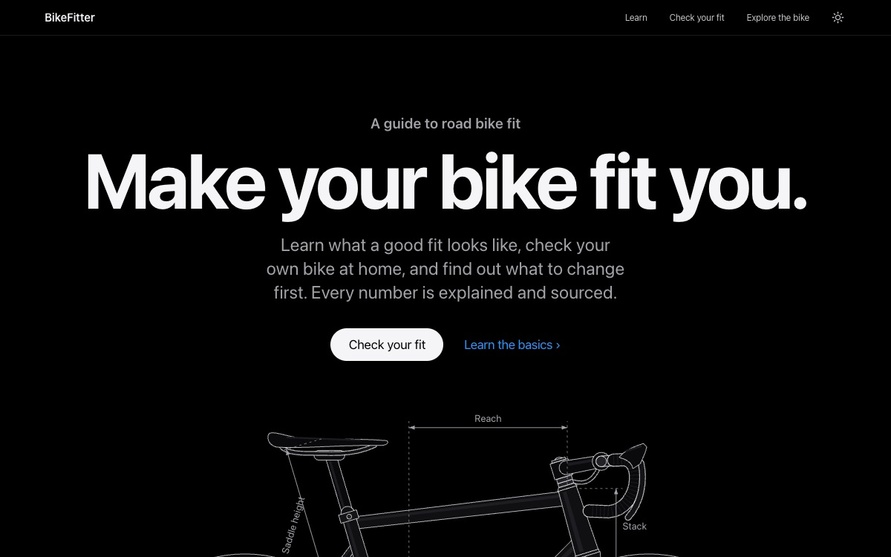

-
Chosen Leads with Notion
Workstand
A tidy workshop: every tool has its place and its own colour. Friendly, modular and smart.
- Palette
- Type
- Plus Jakarta Sans + JetBrains Mono (chosen). Geist + Geist Mono and Figtree + DM Mono for comparison
- Signature
- Tool colours that follow you (Learn blue, Fit green, Bike amber), dotted pegboard panels, real interface previews in windows, shape-coded evidence labels (◆ ● ▲)
All design work follows the
workstand-designskill. -
Leads with claude.dev
Logbook
A fitter’s notebook: every page measured, labelled and indexed. Warm paper, graphite text and monospace structure.
- Palette
- Type
- Instrument Sans + IBM Plex Mono, Schibsted Grotesk + Martian Mono, or Newsreader + JetBrains Mono
- Signature
- [01] numbered navigation, “On this page” index with hatched reading progress, tree lines (└), job-card field grids, highlighter for the one thing to remember
Retired: kept for reference only.
-
Leads with The Verge
Velodrome
A race-day programme: condensed headlines, a serif for reading, mono capitals for labels, and big numbers.
- Palette
- Type
- Archivo + Source Serif 4 + JetBrains Mono, Barlow Condensed + Literata + IBM Plex Mono, or Sofia Sans Extra Condensed + Newsreader + Space Mono
- Signature
- Velodrome track lines under every page title, outlined lap-board numerals, slash navigation, evidence shown by label weight, a full-width wordmark footer
Retired: kept for reference only.
First baseline

Carbon
The first direction you chose: a faithful take on Apple’s Pro pages. Kept for reference; Workstand replaced it as BikeFitter’s own identity. It has its own pages and no Preview bar.